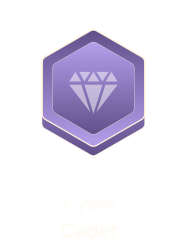

Climb the ranks, reap the benefits
Our innovative point-based system allows volunteers to progress through different levels, earning stars with distinctive titles along the way:


Certificates and recognitions, verified through blockchain technology, are granted, and incentives are introduced once you reach the Ambassador/Master Trainer level. Encouragement lies at the core of our approach, as we aim to reach the masses through the "Each one teaches 10" plan, creating an extensive network of active global volunteers.